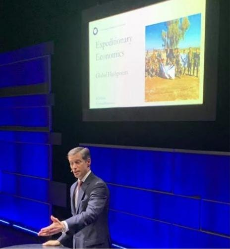

Maritime Prosperity Zones
Break ground years sooner
in a Maritime Prosperity Zone.
Candor brings the tactics.
For states: Be a Mirror Zone state at MirrorZones.org →
Or write Stephen@Hollingshead.com
The 5 Tools
Every rule, permit, and delay between the paperwork and the groundbreaking.
A five-tool player hits for average, hits for power, runs, fields, and throws. The 5 Tools cover the field the same way.
- 01
Zones with Regulatory Framework Agreements
Zones designate areas for tax incentives and include a Regulatory Framework Agreement (RFA), enticing industries back to American soil.
- 02
Voluntary Pilots
Voluntary Pilots allow opt-in experiments without lengthy rulemaking.
- 03
Permit by Rule
Permit by Rule sets clear standards for automatic approvals.
- 04
Transparency Technology
Transparency Technology uses sensors and secure records for real-time monitoring.
- 05
Surety Bonds
Surety Bonds shift risk to private professionals, guaranteeing remediation without gatekeeping.
Maritime Prosperity Zones
Zones for the ships, yards, and ports that build America at sea.
Executive Order 14269, Restoring America’s Maritime Dominance, opens the way for Maritime Prosperity Zones (MPZs). Each zone’s Regulatory Framework Agreement is where builders win back the years. Candor negotiates RFAs. We designed the model.
States can go further. Mirror Zone legislation extends the same streamlining to state and private land.
- Texas should win the first Maritime Prosperity Zone The Galveston Daily News
- The race for federal zones starts in the statehouses Washington Examiner
- Mirror Zones model state legislation MirrorZones.org
The math
Spend seven figures to save eight.
The math holds from about $224M of build cost for the first company into a zone. On larger projects, it’s eight figures to save nine.
5 Tools model R28, default inputs.
How we engage
Crawl, walk, run.
We map your project against the 5 Tools and find the fastest lawful path to groundbreaking.
We build the plan and recruit the team.
We negotiate the Regulatory Framework Agreement and see it through to groundbreaking.
Most of the Candor team’s fee is a success fee, paid only if the agreement is signed. Candor pays its own travel and expenses at every stage.

Writing
Selected op-eds
- The race for federal zones starts in the statehousesWashington Examiner
- Texas should win the first Maritime Prosperity ZoneThe Galveston Daily News
- Red Tape Is Keeping Disaster Survivors In Limbo. Here’s How Trump Can Fix ItThe Daily Caller
- Streamlining permits with voluntary pilots can lead an economic revivalThe Hill
- Turbocharging Trump’s Golden Age: Deregulation and Investment AccelerationTownhall
- Federal permit reform: Recovering the lost tools of growthWashington Times
- Iranian AmbitionThe Imaginative Conservative
- Jobs and security for those displaced by ISISWashington Examiner
- Robust property rights can help bring Iraq back from the brinkWashington Examiner
- Safe zone for ISIS genocide victims in Iraq can protect region from IranThe Hill
- Senators, stop the Middle East genocideThe Hill
- Trump should support an independent Kurdistan and stymie Iran’s march to the MediterraneanFox News
- Expeditionary Economics for Iraq & SyriaWashington Examiner
- Restarting economic opportunity in post-ISIS IraqWashington Times
- Countering ISIS Terrorism With EducationHuffington Post
- Security in the Aftermath of ISISThe American Interest
- Resisting ISIS Genocide in IraqReal Clear World
- Arm the Christians and Kurds in Northern IraqNational Review